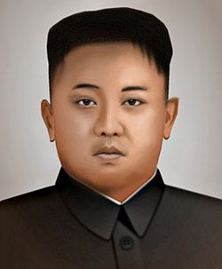

Pyongyang
Introducción
Capital de corea del norte. Lugares/Personas relevantes:
- Kim Jong-un
- Frontera militarizada
- Monumentos de la ciudad
La República Popular Democrática de Corea (RPDC) (chosŏn'gŭl: 조선 민주주의 인민 공화국, hancha: 朝鮮民主主義人民共和國, romanización revisada: Joseon Minjujueui Inmin Gonghwaguk, McCune-Reischauer: Chosŏn Minchuchu-ŭi Inmin Konghwaguk),? llamada comúnmente Corea del Norte para distinguirla de Corea del Sur,10 es un país soberano de Asia Oriental.
Historia
La ocupación militar japonesa de Corea terminó con el fin de la Segunda Guerra Mundial y la rendición de Japón, anunciada el 15 de agosto de 1945. El 8 de agosto, la Unión Soviética rompió el pacto de no agresión que había firmado con Japón en abril de 1941 y, cumpliendo el acuerdo de la conferencia de Yalta de febrero de 1945, en el que se comprometía a intervenir en la guerra contra Japón, procedió a la ocupación de Manchuria, Corea, y las islas de Sajalín y Kuriles. El 10 de agosto de 1945, el Gobierno estadounidense, que en ese momento no disponía de tropas desplegadas en la península, ordenó que se delimitasen dos zonas de ocupacióna y eligió arbitrariamente una demarcación a lo largo del paralelo 38, que fue aceptada de inmediato por los soviéticos.12 Después de tres años en los que fracasaron varios proyectos de unificación, el 15 de agosto de 1948 los estadounidenses crearon la República de Corea en el sur, presidida por Syngman Rhee, un veterano político exiliado en Hawái y opositor a la invasión japonesa de Corea. En respuesta, los soviéticos reconocieron el 9 de septiembre la República Popular Democrática de Corea, con un Gobierno encabezado por Kim Il-sung, que había luchado desde 1932 contra los japoneses,13 quienes lo consideraban uno de los líderes guerrilleros coreanos más populares y peligrosos.14 El Gobierno del norte adoptó una forma autocrática y el del sur inició la represión de la guerrilla procomunista y de otros movimientos de izquierda, pero ambos regímenes, una vez retiradas las fuerzas ocupantes, aspiraban por igual a unificar el país bajo su mando. Se sucedieron las provocaciones fronterizas y tanto Rhee como Kim Il-sung solicitaron apoyo para una invasión, pero estadounidenses y soviéticos se negaron a concederlo en primera instancia, aunque finalmente Stalin le prestó al líder norcoreano un respaldo limitado y condicionado a la aceptación de Mao.15 Mao reaccionó con prudencia y le pidió a Stalin confirmación de la versión de Kim, mientras que este ordenó que se excluyera a los chinos de cualquier planificación militar, lo que incluía ocultarles la propia fecha del ataque.16
Lugares/Personas relevantes:
Kim Jong-un
Kim Jong-un, Kim Jong Un, Kim Chong-un, Kim Jong-eun o Kim Jeong-eun[cita requerida] /kim dʑʌŋɯn/ (chosŏn'gŭl: 김정은, hancha: 金正恩)? (Pionyang, 8 de enero de 1983)4 es un militar y político norcoreano, en la actualidad jefe de Estado de dicho país asiático. Educado en Berna, Suiza, habla inglés y alemán,5 y desde el 27 de septiembre de 2010 posee el rango de general de cuatro estrellas.6 7
Frontera militarizada

La Zona desmilitarizada de Corea (ZDC) (hangul: 한반도의 군사 분계선, romanización revisada: Hanbando-eui Gunsa Bungeseon, McCune-Reischauer: Hanpanto'eui Kunsa Punkesǒn)?, también conocida como frontera intercoreana, es una franja de seguridad que protege el límite territorial de tregua entre la República Democrática Popular de Corea (Corea del Norte) y la República de Corea (Corea del Sur). Establecida en 1953, mide 4 km de ancho y 238 km de longitud. Esta zona, diseñada específicamente para la contención militar, es de carácter hostil y está casi despoblada de civiles. En 1970, se descubrieron tres túneles que se usaban para espionaje y veinte años después se halló uno más, todos construidos por militares de Corea del Norte. Toda la zona se encuentra permanentemente iluminada, excepto por el área de los ferrocarriles de Kaesong, Kosong (ambas en la parte norcoreana), Munson y Sokcho (en el lado surcoreano). En medio de la Zona desmilitarizada se encuentra el poblado de Panmunjom, en donde se firmó el armisticio de la Guerra de Corea. De conformidad con el tratado de Panmunjon, la parte sur de la ZDC está administrada por Estados Unidos, mientras que la parte norte está administrada por Corea del Norte. Lo curioso de esta zona hostil es que cuenta con una gran diversidad ecológica en flora y fauna, que además ha visto favorecido su desarrollo debido al despoblamiento humano de la zona en las últimas décadas.